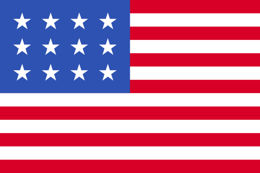

Nord e Centro America
Con quali paesi confinano gli Stati Uniti?
Gli Stati Uniti confinano con 2 paesi: Canada e Messico.
Vedi gli Stati Uniti sulla mappa interattiva →
Paesi confinanti degli Stati Uniti
Per numero di paesi confinanti gli Stati Uniti sono al 114° posto nel mondo, a pari merito con altri 27 paesi.
Scheda degli Stati Uniti
- Capitale
- Washington
- Lingue ufficiali
- Inglese
- Valuta
- Dollaro statunitense (USD)
- Continente
- Nord e Centro America
- Superficie
- circa 9.834.000 km²
- Paesi confinanti
- 2